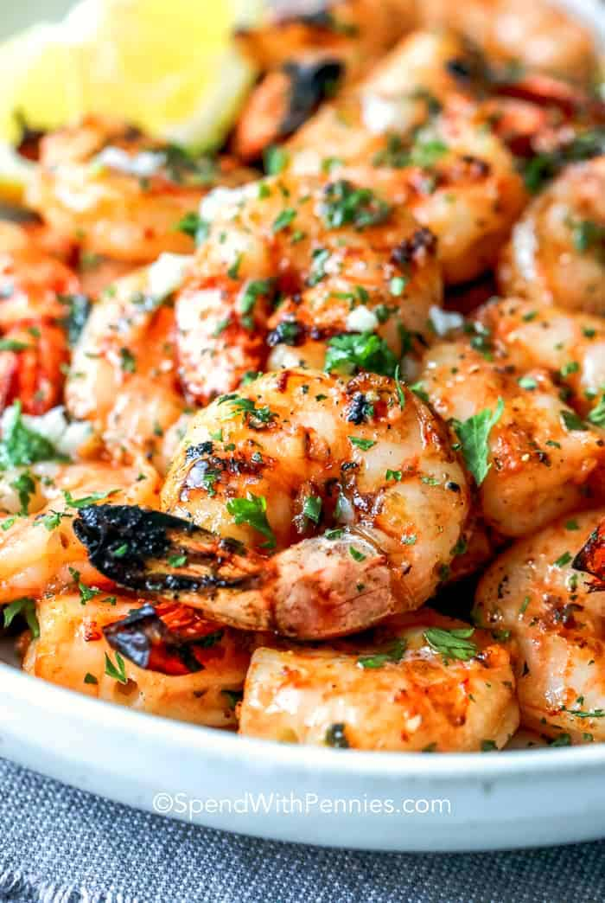

How to Create Grilled Garlic Shrimp

Descriptions
Garlic grilled shrimp skewers are what summer is all about. Jumbo shrimp are marinated in a delicious garlic herb mixture, then grilled to perfection in under 10 minutes. You can’t beat a recipe that’s easy to make yet fancy enough to serve at your next party.
Ingredients
- 1 pound large shrimp
- 1/4 cup olive oil
- 1/4 cup fresh cilantro, finely chopped
- 1/4 cup fresh parsley, finely chopped
- 4 cloves garlic, minced
- 1 tablespoon lemon juice
- 1/2 teaspoon salt
- 1/4 teaspoon black pepper
- pinch cayenne pepper, adjust to spice preference
Steps
- Add the olive oil, lemon juice, herbs, garlic, and spices to a small mixing bowl and whisk together.
- Place the shrimp in a bowl and pour 3/4 of the marinade on top of the shrimp. Mix together gently until the shrimp are well coated.
- Cover the bowl and marinate the shrimp for 30 minutes to an hour.
- Thread the shrimp on the skewers and make sure to get all the good garlic and herbs from the bowl and spread on to the shrimp.
- Heat a grill or grill pan on medium high heat.
- Once the grill is hot, place the shrimp skewers on the grill and cook the shrimp for 2-3 minutes each side, or until they turn pink and opaque.
- Remove the shrimp to a plate and spoon the remaining marinade on top before serving.